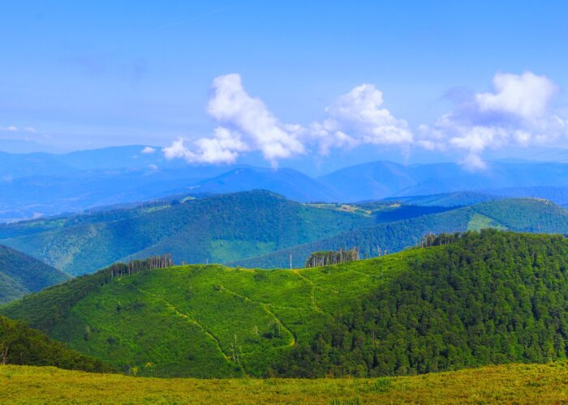
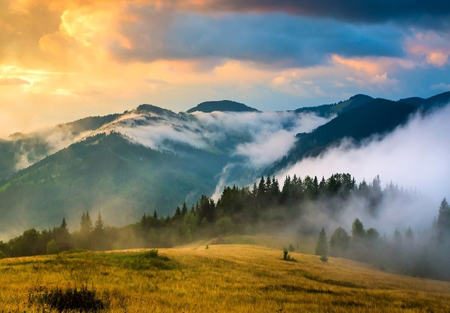
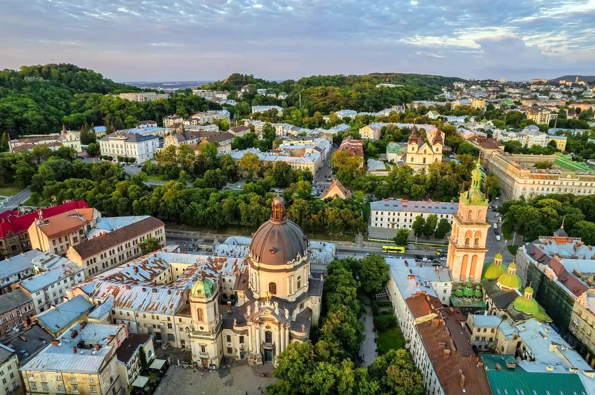
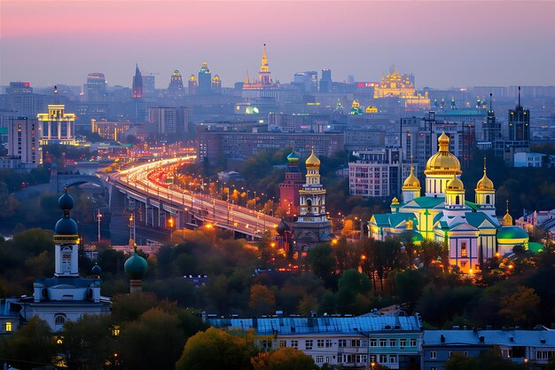
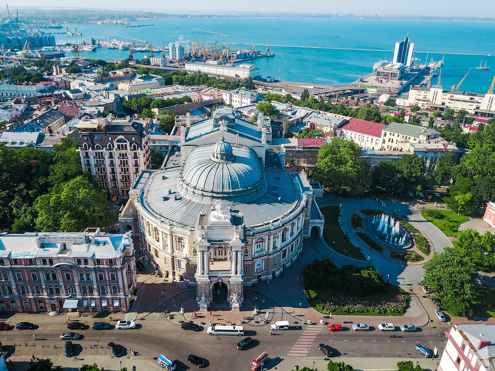
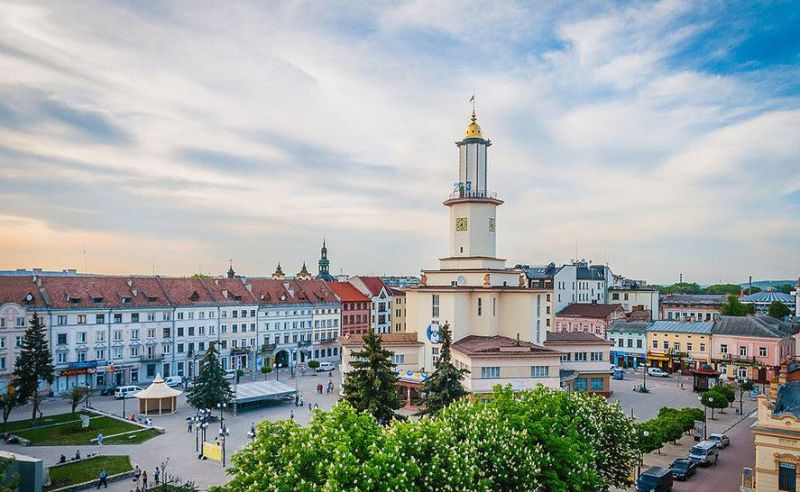

Гори
Карпати
Одне з найкращих місць для трекінгу та зимових розваг. Гора Говерла — найвища точка України (2 061 м).

Природа
Гірські пейзажі
Унікальні краєвиди, чисте повітря та тиша — ідеальне місце для відпочинку від міста.

Місто
Львів
Середньовічний центр, занесений до списку ЮНЕСКО. Кав'ярні, ринок та неймовірна атмосфера.

Столиця
Київ
Києво-Печерська Лавра, Золоті ворота та вулиця Андріївський узвіз — столиця з тисячолітньою душею.

Море
Одеса
Потьомкінські сходи, Дерибасівська та знаменитий одеський гумор.

Захід
Івано-Франківськ
Ворота до Карпат. Затишне місто з великою кількістю кав'ярень та зручним розташуванням.